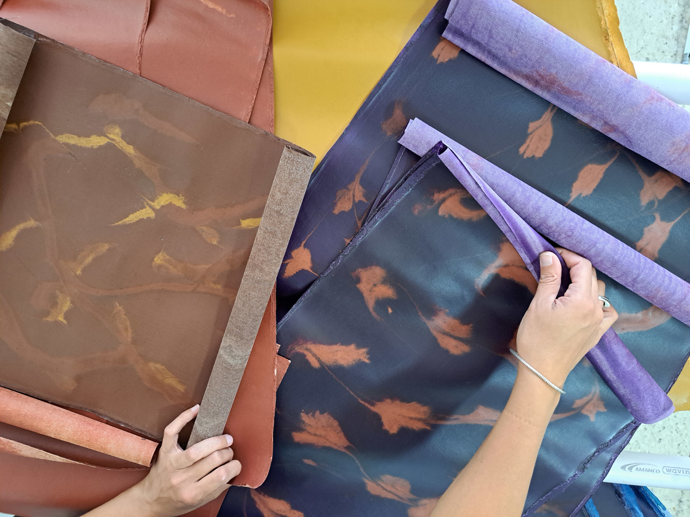
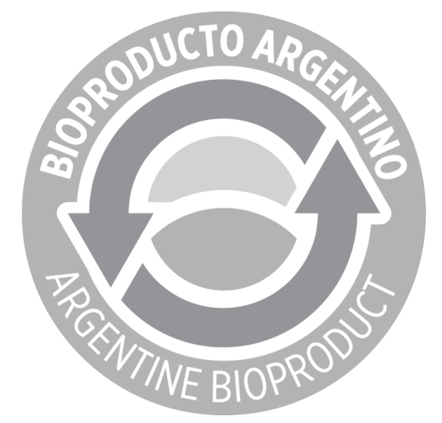
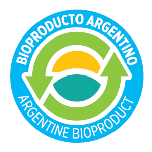

Producción de biomateriales
Producimos y comercializamos Revium™, un biotextil basado en celulosa bacteriana, disponible en distintas variantes, colores y acabados.
Biotecnología y diseño para una nueva generación de materiales.
Somos +USO, una empresa argentina dedicada al desarrollo y producción de biomateriales a partir de celulosa bacteriana. Desde Mar del Plata, combinamos biotecnología, conocimiento científico y diseño para crear nuevas alternativas materiales destinadas a empresas, fabricantes y profesionales del diseño.
Nuestra trayectoria tiene sus raíces en el diseño circular y la reutilización de recursos. Desde 2023, evolucionamos hacia la biofabricación con el desarrollo de Revium™, nuestro biotextil, que hoy producimos y comercializamos en diferentes variantes y acabados.
Trabajamos para consolidar una biofábrica capaz de ofrecer materiales con calidad consistente, trazabilidad y capacidad de suministro creciente.

Producimos y comercializamos Revium™, un biotextil basado en celulosa bacteriana, disponible en distintas variantes, colores y acabados.
Trabajamos junto a empresas y diseñadores para adaptar el material a nuevas aplicaciones y desarrollar piezas y productos personalizados.
Optimizamos formulaciones y procesos para mejorar el desempeño, la reproducibilidad y el escalado de nuestros biomateriales.
En +USO entendemos que desarrollar un nuevo material implica mucho más que obtenerlo en el laboratorio. El desafío es transformar un proceso biotecnológico en una solución que pueda producirse, adaptarse y utilizarse en aplicaciones reales.
Por eso integramos investigación científica, desarrollo de producto y producción. Evaluamos formulaciones, propiedades y procesos para mejorar el desempeño de Revium™ y avanzar hacia una fabricación cada vez más estable, trazable y escalable.
Nuestro objetivo es conectar el potencial de la biotecnología con las necesidades concretas del diseño y la industria.
Perfil provisional. Su trabajo articula diseño, exploración material y desarrollo de aplicaciones.
Perfil provisional. Su trabajo integra investigación, procesos biológicos y desarrollo productivo.


Logotipo pendiente
Festival P3RLA · logotipo pendiente
Trabajamos para consolidar +USO como una biofábrica capaz de abastecer a empresas y fabricantes con biomateriales desarrollados localmente.
Hablemos de tu proyecto